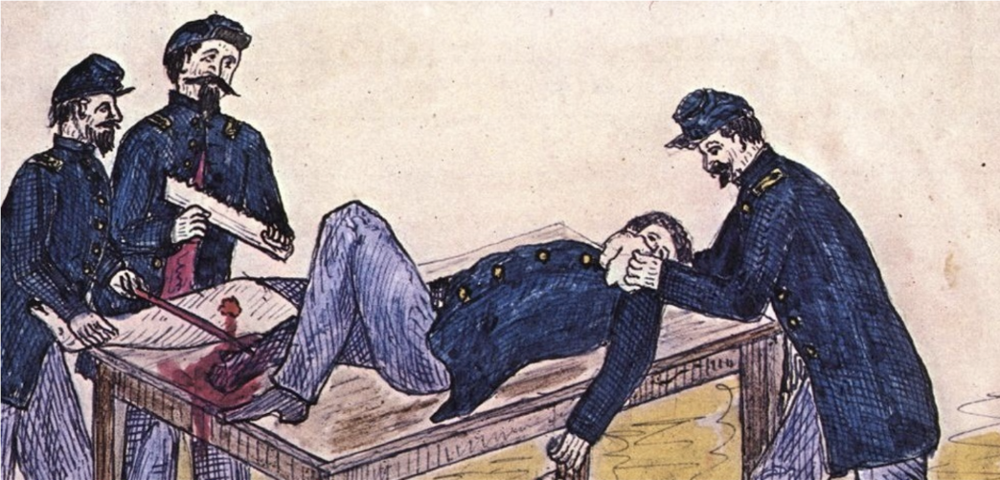
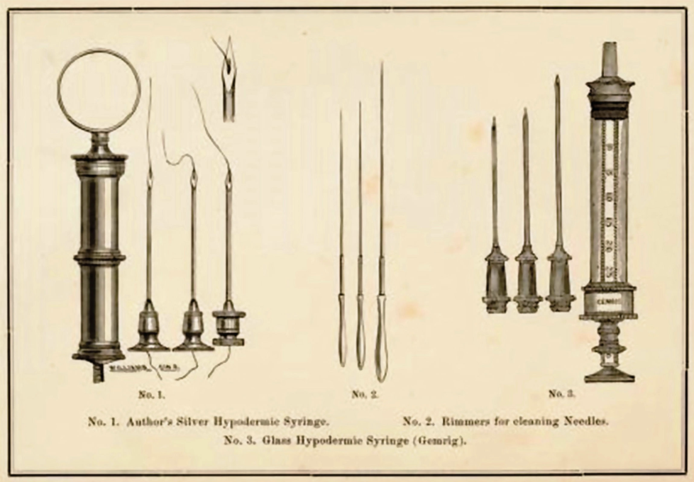
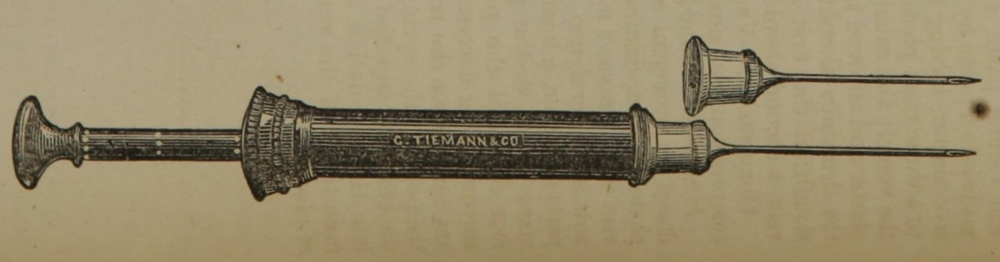
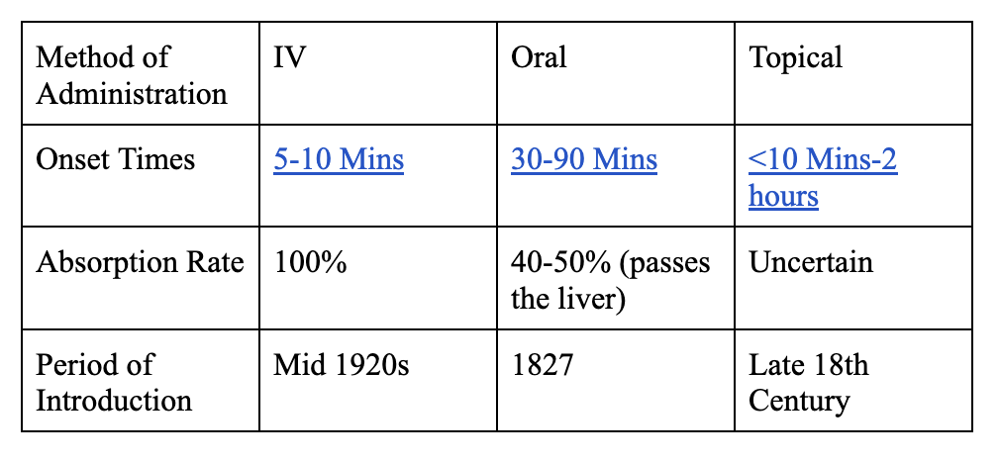
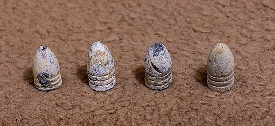
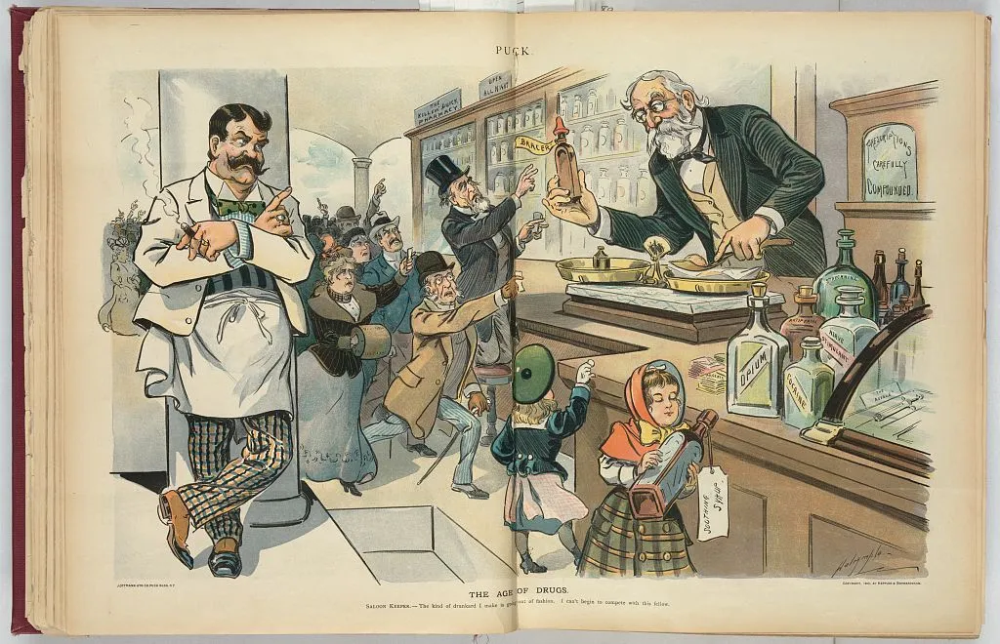
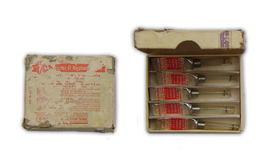
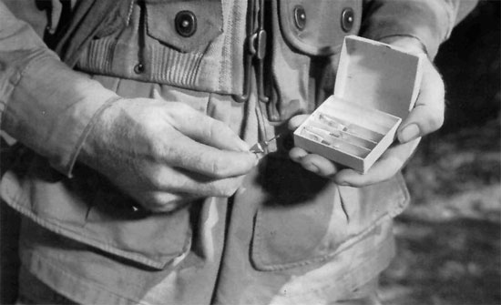
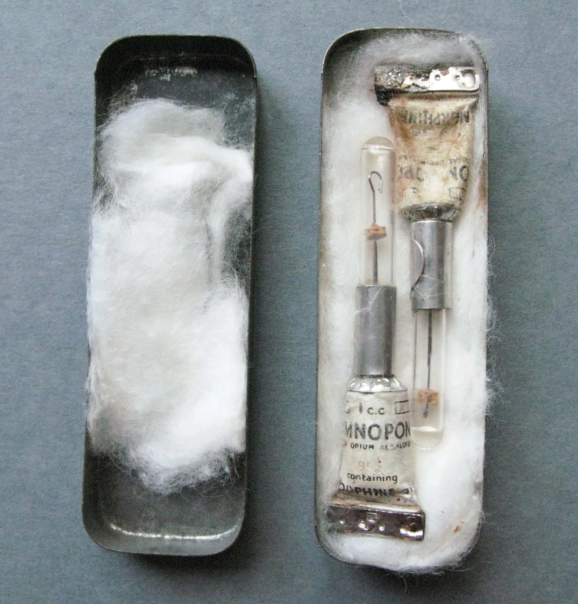

“Washington, D.C. Patients in Ward K of Armory Square Hospital.” August 1865. Library of Congress

Alfred Bellard, "Drawing of a Civil War Leg Amputation from the Diary of Alfred Bellard, 1860s," Civil War In Minnesota Lives
“Prior to the war, alcoholic drinks, physical restraints, opioid drugs and bite blocks were the most typically employed methods of keeping a patient under control during surgery. It was thought to be unmanly for a male to undergo surgery with an anesthetic, which was usually reserved for women and children. There was even a belief that the use of ‘cold steel’ had a beneficial effect, and it would not cause the depression thought to occur with the use of anesthesia.”(Maurice S. Albin, "Modern anesthesia traces roots to American civil war," 2014)
"Two versions of a syringe to accompany the needle were independently invented by scientists in 1853. Charles Gabriel Pravaz invented a silver tube syringe that used a screw mechanism to carefully control the dosage, while Alexander Wood used a glass tube that allowed the physician to see how much was in the syringe and a plunger."(Will, et al, The History of Maxillofacial Surgery: An Evidence-Based Journey, 2017)
The hypodermic needle allowed drugs to be administered directly into the bloodstream, making effects faster and more potent, unlike prior drugs that were delivered orally or topically on the wounds.

Stephen Smith, c. 1862, The Hand-Book of Surgical Operations , National Library of Medicine Digital Collections.

Stephen Smith, c. 1862, The Hand-Book of Surgical Operations , National Library of Medicine Digital Collections.

Onset times and absorption rates provided by articles: Extended-release morphine sulfate in treatment of severe acute and chronic pain, Effectiveness of Topical Administration of Opioids in Palliative Care: A Systematic Review, and Comparative Effectiveness of Analgesics To Reduce Acute Pain in the Prehospital Setting.
IV, administered via a hypodermic syringe, clearly has the highest absorption rate and fastest onset times. Oral administration clearly lags far behind. Topical administration’s volatility posed risks–while some were very effective, others were completely ineffective.
“Dr. Silas Weir Mitchell noted that in the army hospital for nervous diseases, more than 40,000 doses of morphine were given hypodermically to psychiatric patients in a single year. A staggering 10 million opium pills were given to patients during the war, along with 2,841,000 ounces of other opium-based preparations such as laudanum, opium with ipeac, and paregoric. In all, 29,828 ounces of morphine sulphate were administered. Not coincidentally, by 1900 there were 200,000 drug addicts in America.”
(Richard A. Gaibriel, "Healers or Horrors: Civil War Medicine," 2011)
Stable anesthesia revolutionized how surgeons approached surgery. Amputations were conducted at unprecedented rates, and the survival rates of such surgeries were also unbelievably high. Surgeons no longer worried about retaliation from patients during surgery and could ignore the nightmare of a patient dying from the anesthesia. They also administered morphine with precision due to the hypodermic syringe. Morphine's introduction as a stable anesthesia, though, had saved countless lives; it led to countless overdose deaths in the future.
"Of the 29,143 amputations performed, the fatality rate was 25.8 percent. Out of 4,656 excisions, the fatality rate was 27.5 percent."
(Harold Ellis, "Civil War Medicine: Challenges and Triumphs," 2002)
Jocelyn Green, 2015, "The Civil War and Prosthetic Limbs"
"Embalming Surgeon," 1863, Library of Congress
Unlike previous wars, amputations became in higher demand because of the Minié ball. This new conically shaped bullet, unlike prior spherical ones, splintered the bone instead of penetrating it, requiring more amputations to effectively treat wounds. Given the numerous amputations that took place, morphine was necessary as an anesthetic and as a painkiller in the post-surgery days.
Edward Stauch, “Wallen wounded by Minie ball,” 1863, Wikimedia Commons
"The vast majority of wounds documented during the Civil War were caused by the Minié ball, while the rest were from grapeshot, canister or other exploding shells. Few men were treated for saber or bayonet wounds and even fewer for cannon ball wounds"(Terry Reimer, "Surgeon's Call," 2007)
“The effect of the powder when firing is to expand the thin portion of lead around the recess at the base of the ball, making it fit tightly the grooves of the rifle. With these advantages, the missile may be project to immense distances with unerring precision, and the effects are truly terrible; bones are ground almost to powder, muscles, ligaments, and tendons torn away, and the parts otherwise so mutilated, that loss of life, certainly of limb, is almost an inevitable consequence.”(William Helmuth "A System of Surgery," 1879)

Mike Cumpston, “Minié ball,” 2008, Wikimedia Commons

Louis Dalrymple, “The Age of Drugs,” 1900, Library of Congress.
"Opiates are addictive, however, and doctors’ prescriptions all-too-predictably led to addiction for Civil War veterans. Not only was opiate addiction dangerous and unhealthy, resulting in thousands of overdose deaths between the 1860s and the early twentieth century, but the condition was also deeply stigmatized in Civil War America. Most Americans considered addiction to be an unmanly and immoral vice. Addicted veterans deserved punishment, not sympathy, according to contemporary observers."Jonathan Jones, "The “Great Risk” of “Opium Eating”: How Civil War-Era Doctors Reacted to Prescription Opioid Addiction," 2020
For context, during this time period in the 1860s, men were expected to be self-reliant workers, and masculinity was an expected societal role. America was a male-dominated society, where "manly"/"masculine" men were the norm. Morphine, being a sustained pain relief for many amputees, hence, made the addicts who relied on the drug be frowned on in society for being "weak".
"The experience of Confederate artillerist John Tackett Goolrick and Frances Bernard Goolrick, his wife, illustrates the wide-ranging health, emotional, and social consequences of opioid addiction for Civil War veterans and their families. The Goolricks wrote scores of letters describing the staggering costs of John’s morphine addiction, which stalked the family for nearly a half-century after the Civil War."Jonathan Jones, Opium Slavery: Civil War Veterans and Opiate Addiction , 2020



E. R. Squibb & Sons, "Item No. 9115500; Morphine Tartrate," "A paratrooper demonstrates Medical Item No. 9115500, 5 Tubes, WW2 US Medical Research Centre" National Museum of the Royal New Zealand Navy, "Morphine syrettes (Omnopon Total Opium Alkaloid)," Torpedo Bay Navy Museum Rebecca L. Thomas, "When Narcotics are Mishandled," Thomas & Wickenheiser